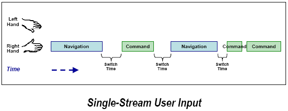
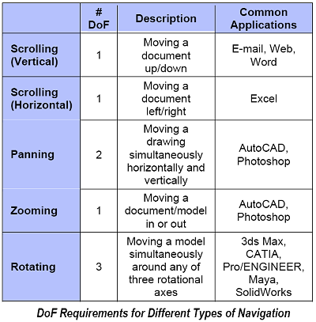
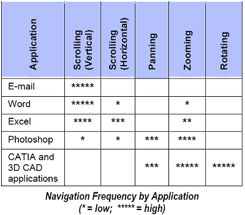
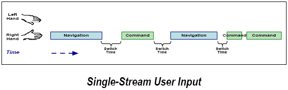
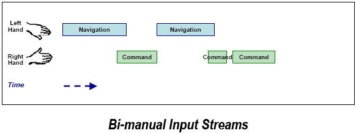
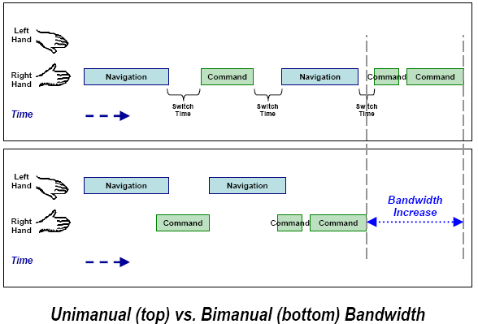
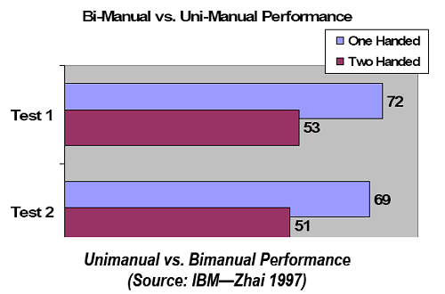

|
3.4 Girdi Akýþý
3D CAD uygulamalarýndaki ilk kullanýcý arayüzü geniþliði sýnýrý, "girdi akýþý" ile çalýþmak zorundadýr. Yukarýda anlatýldýðý gibi tüm kullanýcý girdileri sað ve sol elle girilmekte, ama yine de, sol el Ctrl, shift, alt gibi klavye tuþlarýný yönetmek haricinde çok küçük bir iþ yapmaktadýr. Aþaðýda gösterilen kullanýcý arayüzü bant geniþliði taslaðýnda, sað elin (sað elini kullanan biri olduðunu varsayalým) temelde bir girdi akýþý oluþturarak hemen hemen tüm iþi yaptýðýný görürüz.

3D CAD ve günlük bilgisayar kullanýcýlarýnýn gözlemlerinde, TAG, 3D CAD kullanýcýlarýnýn sýradan bilgisayar kullanýcýlarýna oranla 5 ila 10 kata kadar daha fazla navigasyon/dakika ve komut/dakika oraný olduðunu tahmin ediyor. Ve tüm bunlar tek bir akýþ içinde iþlem gördüðünde (her ne kadar bazýlarý klavye tuþlarý ile ayarlansa da) bant geniþliði genelde çok sýnýrlýdýr.
Navigasyon
Ýkinci kullanýcý arayüzü limiti, navigasyon. Navigasyon, çalýþýlacak noktaya eriþimi dahil eder. Bu, bir e-postayý okumak için ekraný aþaðý çekmek, Photoshop'da kaydýrma yapmak, ya da CATIA'da 3 boyutlu bir modelin arkasýný görüntülemek için döndürmek olabilir.
Ayrýca navigasyon bir çok programda sýk kullanýlan bir aktivitedir, ve uygulamanýn çeþidine göre farklýlýk gösterir. Aþaðýdaki çizelge, serbestlik derecesi sayýsý ile beraber genel navigasyonlarýn tanýmýný gösterir.

Bu DoF rakamlarý ektir. Örneðin, kaydýrmak ve yakýnlaþtýrmak için 2(kaydýrma) + 1 (yakýnlaþtýrma) = 3DoF gerekmekte. Kaydýrmak, yakýnlaþtýrmak ve döndürmek için 2 (kaydýrma) + 1 (yakýnlaþtýrma) + 3 (döndürme) = 6 DoF gerekli.
Deðiþik uygulamalar kullanýmlarýna göre bu deðiþik tipteki navigasyonlarda farklýlýk gösterebilir. Bunu aþaðýdaki þemada görebilirsiniz.

Bu göze çarpan gerçek þudur ki, 3D uygulamalar daha çok yakýnlaþtýrma ve kaydýrma (3DoF) ya da yakýnlaþtýrma, kaydýrma ve döndürme (6DoF) kullanýlmaktadýr. Buna göre, bu baþka bir önemli kullanýcý arayüzü bant geniþliði olanaðý sunar.
"Akýntýda olmak"
Yüksek bant geniþliði konusundaki fýrsatlarla alakalý araþtýrmaya dönmeden önce, 3 bant geniþlikli sýnýrlamalarýn "akýntýda olmak" adýnda doðal ve yaratýcý bir iþleme giriþtiðini not etmekte fayda var. "Akýntýda olmak" sanatçýlar, atletler ve tasarýmcýlarýn aktivitelerini
tamamen kontrole aldýklarý anlar için kullandýklarý bir terimdir. Bu durumu
tanýmlamak için kullanýlan bir baþka taným iste " alanda olmak" týr.
Tüm bu aktiviteler devamlýlýk gerektiren konsantrasyon ve mental veya fiziksel
enerji kullanýmý içerir.
Karmaþýk ve kavrama ihtiyaçlý uygulamalar ile çalýþan tüm 3d Cad bilgisayar
kullanýcýlarý için, "akýntýda olmak" daha yüksek kalite ve daha hýzlý performans
anlamýna gelmektedir. Bununla birlikte sýk sýk kavramsal bant geniþliðini emen
ve kullanýcýnýn yavaþlamasýný isteyen kullanýcý arayüzleri tarafýndan rahatsýz edilirler
(bederson 2002)
Önemli bir þekilde, akýntýda olmaktaki en yaygýn kesintilerden biri ise, düþük bant geniþliðine
sahip bir kullanýcý arayüzünün kullanýcýlarýnýn düþündükleri kadar hýzlý
görevlerine baðlanamamasýdýr.
Buna zýt olarak, yüksek bant geniþliði kullanýcý ara yüzleri 3d cad kullanýcýlarýn
akýntýda kalmasýna izin verir; biz þimdi de bu bant geniþliði fýrsatlarýna döneceðiz.
Yüksek Bant Geniþliði Kullanýcý Arayüzleri Fýrsatlarý
Bir önceki bölümde 2 önemli kullanýcý arayüzü tanýtýlmýþtý:
- Limitli giriþ akýmlarý
- Limitli navigasyon
Bu iki arayüzlerin ikisi için de , bant geniþliðindeki önemli yükseliþ saðlayabilen araþtýrma saðlar.
Yüksek Bant geniþliði Giriþ Akýmlarý
3d Cad kullanýcýlarýnýn dakikada 5 10 kere fazla komut giriþi yaptýðýný gözlemlediðimiz zamanki
yaþanan tek akýmlý giriþ problemlerini tanýtmýþtýk.Normal bir kullanýcýnýn tek akýmlý sistemden
yeteri kadar iyi faydalanamamasýna raðmen 3d cad kullanýcýlarý daha yüksek bir
bant geniþliði gerekliliði vardýr.
Bir çok umut verici kullanýcý arayüzü teþebbüsü insanlýðýn avantajlarýný ve ayný zamanda kooperatif modasýný kullanýmýný ayný anda elinde tutarak kullanmaktadýr.Buxton 2002'de belirtildiði gibi.
Bir öðrenci not alýrken kitaptan bir sayfa çevirir. Bir sürücü arabayý sürerken diþlileri çevirir.Bir kayýt mühendisi telli çalgýlarý getirirken davul sesini azaltmalýdýr.
Her iki elinizin araçlarla donatýlarak (tipik bir 3d Mouse sol elde ve standart bir 2d Mouse sað elde ) bant geniþliðinde önemli artýþlar elde edilebilir.
Ýlk olarak,tek akýþ ara yüzlerinin bugün nasýl çalýþtýðýna bakmalýsýnýz.

Not bir kullanýcý bir tarzdan diðer tarza geçerken anahtar zamana uðramaktadýr.Evrensel çevre sefer ve doðal ayýklanmanýn bir örneðidir.Sað el ilk gezginlerin ilgi noktasý Mouse kullanýmýnda tarz üzerine sonra Mouse komut için bir secim aracý haline gelir.Bu süreç kendini sonsuz kez tekrarlar.
Ayrýca paralelizmin dikkat eksikliði: Kullanýcý navigasyon ya da seçimden sadece birini tercih eder.
Bir çift elli (bi-manual) giriþ akýþý aþaðýda gösterildiði gibi aktivite profili deðiþtirmek istiyorsunuz.

Çünkü eller arasýnda performans uygulamasý vardýr kullanýcý geçiþ için novigasyon modundan geriye dönmek için bir anahtara ihtiyaç duymaz.Esas bant geniþliði gereksiz anahtar kaldýrma gereksinimizi azaltýr.
Ek olarak insan psikolojisi ek olarak aralarýnda bant geniþliði saðlayan ek boþluk payýný senkronize eder.Bu paralellik önceki resimde kýsmi navigasyon ve komut örtüþme tarafýndan resmedilmiþtir.kullanýcý sol navigasyonu tamamlarken sað el komutuyla baþlayabilir.
Çift el ve tek el performans karþýlaþtýrmasý sonucunda aþaðýda gösterilmiþtir.

Kavramsal çerçeve yukarýda açýklanan bir çalýþmada IBM (Zhai 1997) tarafýndan yürütülen doðrulanmýþ oldu.dominant olan çekinik olan ele göre 1.36 kat daha hýzlýydý.Bu ödev navigasyon ve doðal ayýklanma içermektedir.

Bundan baþka Toronto Üniversitesi'nde (1997)yürütülen bir çalýþmada daha biliþsel talep görevleri olduðu gibi (daha büyük daha kompleks modeller) zhai araþtýrmalarýndan iki el arayüzü daha önemli bir performans ürünü saðladý.
|